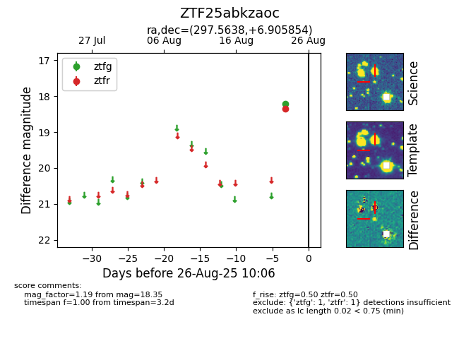

Target ZTF25abkzaoc at 2025-08-26 10:06, see:
FINK: fink-portal.org/ZTF25abkzaoc
Lasair: lasair-ztf.lsst.ac.uk/objects/ZTF25abkzaoc
ALeRCE: alerce.online/object/ZTF25abkzaoc
alt names
ZTF25abkzaoc (ztf,fink)
coordinates:
equatorial (ra, dec) = (297.5638,+6.90585)
galactic (l, b) = (45.9448,-9.75530)
photometry
last ztfg=18.21, ztfr=18.35
1 ztfg, 1 ztfr detections
